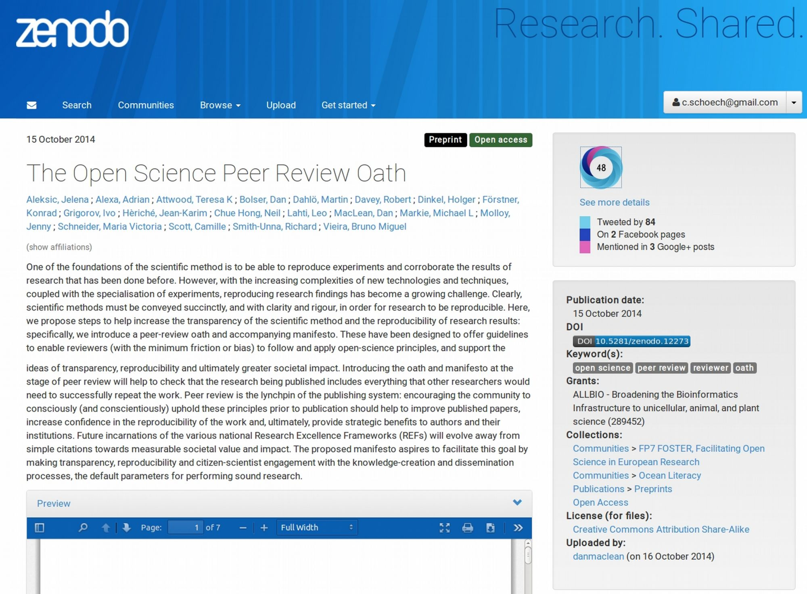

<!doctype html>
<html lang="en">
<head>
<meta charset="utf-8">
<!-- CUSTOMIZE THIS! -->
<title>Einführung in die Digital Humanities</title>
<meta name="author" content="Christof Schöch">
<!-- END -->
<meta name="description" content="Slides">
<meta name="apple-mobile-web-app-capable" content="yes">
<meta name="apple-mobile-web-app-status-bar-style" content="black-translucent">
<meta name="viewport" content="width=device-width, initial-scale=1.0, maximum-scale=1.0, user-scalable=no, minimal-ui">
<link rel="stylesheet" href="css/reveal.css">
<link rel="stylesheet" href="css/theme/simple.css" id="theme">
<!-- Code syntax highlighting -->
<link rel="stylesheet" href="lib/css/zenburn.css">
<!-- Printing and PDF exports -->
<script>
var link = document.createElement( 'link' );
link.rel = 'stylesheet';
link.type = 'text/css';
link.href = window.location.search.match( /print-pdf/gi ) ? 'css/print/pdf.css' : 'css/print/paper.css';
document.getElementsByTagName( 'head' )[0].appendChild( link );
</script>
<!--[if lt IE 9]>
<script src="lib/js/html5shiv.js"></script>
<![endif]-->
</head>

<body>
<div class="reveal">
<div class="slides">
<section data-markdown="" data-separator="^\n--\n" data-separator-vertical="^\n---\n" data-charset="utf-8" data-background-image="img/basics/uni-trier-mini.png" data-background-size="50px" data-background-position="top 10px right 10px">
<script type="text/template">
# Open Humanities
<br/>
<hr/>
<br/>
Vorlesung *Einführung in die Digital Humanities*
<br/>
<br/>
Prof. Dr. Christof Schöch
<br/>
Wintersemester 2020/21
<br/>
<br/>
<hr/>
</img>


--
## Sitzungsüberblick
1. Was ist mit "open" gemeint?
2. Publikationen: Open Access (OA)
3. Daten: Open Data
4. Software: Open Source
5. Lehre: Open Educational Resources (OER)

--
## Motivation (Januar 2020!)
* "Coronavirus is a proving ground for scientific transparency",  [*Quartz*](https://qz.com/1795103/coronavirus-is-a-proving-ground-for-scientific-transparency/)
* "Sharing research data and findings relevant to the novel coronavirus (nCoV) outbreak", [*Wellcome.ac.uk*](https://wellcome.ac.uk/press-release/sharing-research-data-and-findings-relevant-novel-coronavirus-ncov-outbreak)
* "Scientists are unraveling the Chinese coronavirus with unprecedented speed and openness", [*Washington Post*](https://www.washingtonpost.com/science/2020/01/24/scientists-are-unraveling-chinese-coronavirus-with-unprecedented-speed-openness/)
* "'We're opening everything': Scientists share coronavirus data in unprecedented way to contain, treat disease", [*CBC News*](https://www.cbc.ca/news/health/coronavirus-2019-ncov-science-virus-genome-who-research-collaboration-1.5446948)


--
## 1. Was ist mit "open" gemeint?

---
### Definition von Open Science
>„Open Science öffnet den wissenschaftlichen Prozess von der ersten Idee bis zur finalen Publikation, um diesen möglichst nachvollziehbar und für alle nutzbar zu machen.“
<br/>(Quelle: http://www.openscienceasap.org)

---
### Forschungsprozess
* Stand der Forschung und Idee <!-- .element: class="fragment" data-fragment-index="1" -->
* Fragestellungen / Hypothesen <!-- .element: class="fragment" data-fragment-index="2" -->
* Datenerhebung und -erschließung <!-- .element: class="fragment" data-fragment-index="3" -->
* (qualitative / quantitative) Datenanalyse <!-- .element: class="fragment" data-fragment-index="4" -->
* Auswertung und Interpretation <!-- .element: class="fragment" data-fragment-index="5" -->
* Publikation der Daten und Ergebnisse <!-- .element: class="fragment" data-fragment-index="6" -->
* und: Vermittlung in der Lehre <!-- .element: class="fragment" data-fragment-index="7" -->

---
### Forschungsprozess
</img>
<small>Monika Sonntag et al. "Idealtypische Anordnung der Phasen eines Forschungsprozesses im Forschenden Lernen nach Huber", Wikimedia Commons, 2016, 
https://commons.wikimedia.org/wiki/File:Forschungsprozess.jpg, Lizenz: [CC-BY-SA 4.0](https://creativecommons.org/licenses/by-sa/4.0/deed.en)</small>

---
### Gegenstände
* Datenerhebung: „open data“
* Datenanalyse: Software / „open source“
* Ergebnisse: Publikationen / „open access“
* Lehre: „open education“

---
### Aspekte
* Etablierte vs. digitale Abläufe (Digitalisierung) <!-- .element: class="fragment" data-fragment-index="1" --> 
* rechtliche Rahmenbedingungen (Urheberrecht, Lizenzen) <!-- .element: class="fragment" data-fragment-index="2" -->
* technische Rahmenbedingungen (bspw. Standards) <!-- .element: class="fragment" data-fragment-index="3" -->
* Geschäftsmodelle und Modelle von Wissenschaft <!-- .element: class="fragment" data-fragment-index="4" -->
* kostenlos (free) vs. offen (libre) <!-- .element: class="fragment" data-fragment-index="5" -->

---
### Was heißt und zu welchem Ende<br/>publiziert man im Open Access?

<iframe width="600" height="450"
src="https://www.youtube.com/embed/9RQy4wtYls0">
</iframe> 
<br/>Online: https://www.youtube.com/watch?v=9RQy4wtYls0
<br/><br/>[Literaturhinweise](#/8/4)


--
## 2. Publikationen:<br/>Open Access (OA)

---
### Definition (Wikipedia)
>Open access (OA) refers to research outputs which are distributed online and free of cost or other barriers, and possibly with the addition of a Creative Commons license to promote reuse. Open access can be applied to all forms of published research output, including peer-reviewed and non peer-reviewed academic journal articles, conference papers, theses, book chapters, and monographs.

<br/><small>(Quelle: "Open Access", Wikipedia, https://en.wikipedia.org/wiki/Open_access, Jan. 2019, Lizenz: [CC-BY-SA](https://en.wikipedia.org/wiki/Wikipedia:Text_of_Creative_Commons_Attribution-ShareAlike_3.0_Unported_License))</small>

---
### Budpest OA Initiative
>By 'open access' to this literature, we mean its free availability on the public internet, permitting any users to read, download, copy, distribute, print, search, or link to the full texts of these articles, crawl them for indexing, pass them as data to software, or use them for any other lawful purpose, without financial, legal, or technical barriers other than those inseparable from gaining access to the internet itself. The only constraint on reproduction  and distribution, and the only role for copyright in this domain, should be to give authors control over the integrity of their work and the right to be properly acknowledged and cited.

<br/><small>(Quelle: Budapest Open Access Initiative, 2001, https://www.budapestopenaccessinitiative.org/, Lizenz: [CC-BY](https://creativecommons.org/licenses/by/3.0/))

---
### Zeitschriftenpublikation: Prozess
* Forscher/in reicht Artikel bei Zeitschrift ein <!-- .element: class="fragment" data-fragment-index="1" -->
* Zeitschrift organisiert den „peer review“ <!-- .element: class="fragment" data-fragment-index="2" -->
* Annahme oder Ablehnung des Artikels <!-- .element: class="fragment" data-fragment-index="3" -->
* Teilweise: Forscher/in bezahlt Publikationsgebühr <!-- .element: class="fragment" data-fragment-index="4" -->
* Forscher/in tritt alle Verwertungsrechte an den Verlag ab <!-- .element: class="fragment" data-fragment-index="5" -->
* Artikel wird von der Zeitschrift lekoriert <!-- .element: class="fragment" data-fragment-index="6" -->
* Zeitschrift veröffentlicht und bewirbt den Artikel <!-- .element: class="fragment" data-fragment-index="7" -->
* Bibliotheken kaufen die Zeitschrift <!-- .element: class="fragment" data-fragment-index="8" -->
* Andere Forscher/innen lesen den Artikel <!-- .element: class="fragment" data-fragment-index="9" -->

---
##Zeitschriftenpublikation: Problem
* Die Forscher/innen machen die meiste Arbeit (Forschen, Schreiben, Review) <!-- .element: class="fragment" data-fragment-index="1" -->
* Die Forscher/innen werden mit Steuergeldern bezahlt <!-- .element: class="fragment" data-fragment-index="2" -->
* Die Publikationsgebühr wird mit Steuergeldern bezahlt <!-- .element: class="fragment" data-fragment-index="3" -->
* Die Zeitschriften werden mit Steuergeldern gekauft <!-- .element: class="fragment" data-fragment-index="4" -->
* Die Steuerzahler/innen haben keinen Zugang zu den Artikeln <!-- .element: class="fragment" data-fragment-index="5" -->
* Andere Menschen, in vielen Ländern, haben keinen Zugang <!-- .element: class="fragment" data-fragment-index="6" -->
* Manche Verlage verdienen sehr viel Geld (Elsevier: 36% Gewinnmarge) <!-- .element: class="fragment" data-fragment-index="7" -->

---
### Open Access als Lösung?
* Die wichtigsten Schritte werden vorab finanziert (staatlich oder privat) <!-- .element: class="fragment" data-fragment-index="1" -->
* Alle Menschen haben Zugang zu wiss. Erkenntnis <!-- .element: class="fragment" data-fragment-index="2" -->
* Zugangsbeschränkung ist zusätzlicher Aufwand <!-- .element: class="fragment" data-fragment-index="3" -->
* Aber: auch Korrekturlesen, Layouten, Drucken/Server kosten Geld <!-- .element: class="fragment" data-fragment-index="4" -->

---
### Paradigmenwechsel
* **Print**: *Erst filtern, dann publizieren*<br/>(Kosten für Herstellung und Distribution sind hoch)
<br/><br/>
* **Digital**: *Publish first, filter later*<br/>(Publikation is billig, aber Aufmerksamkeit ist knapp) 


---
### Open Access: Varianten
* Green Open Access: Selbst-Archivierung
* Gold Open Access: OA-Zeitschrift
<br/><br/></img>


---
### Green Open Access
* Artikel werden klassisch publiziert (print/digital) 
* Parallel passiert ein OA-Deposit: 
    * Artikel wird in Repository online publiziert
    * Varianten: *pre-print* / *post-print*
    * evtl. mit Embargo-Zeit (*moving wall*)
* Klassisches Geschäftsmodell bleibt weitgehend erhalten

---
### Gold Open Access
* Artikel wird direkt in einer Open Access-Zeitschrift
* Häufig: „Article Processing Charges“ (Publikationsgebühr) statt Subskriptionsgebühr (DEAL: durch nationale Pauschale abgedeckt)
* Neue Geschäftsmodelle: 
    * *freemium*: Basisangebot vs. Zusatzleistungen
    * Institutionelle Mitgliedschaft

---
### Creative Commons-Lizenzen (CC)
* 2001 gegründet von Lawrence Lessig
* Lizenzen beschreiben die anderen eingeräumten Rechte
* Ein einfaches, standardisiertes Mittel, um unter präzisen Bedingungen die Nutzung von intellektuellen / künstlerischen Werken zu gestatten
* Urheberrecht und Autorschaft bleibt gewahrt!
* Siehe: http://creativecommons.org/licenses/


---
### Lawrence Lessig
</img>
<small>(Quelle: Joi Ito, "Lawrence Lessing in May 2017", https://en.wikipedia.org/wiki/Lawrence_Lessig#/media/File:Lawrence_Lessig_May_2017.jpg, Lizenz: [CC-BY 2.0](https://creativecommons.org/licenses/by/2.0)</small>

---
### Creative Commons Varianten
</img>
* CC-0 (Zero): keinerlei Beschränkung der Nutzung
* CC BY (Attribution): Urheber und Lizenz mit Link nennen
* CC BY-SA (Share Alike): Wie CC BY, zudem keine Änderung der Lizenz
* CC BY-NC (Non-Commercial): Wie CC BY-SA, zudem keine kommerzielle Nutzung
* CC BY-ND (No Derivatives): Wie CC-BY-SA, zudem keine Änderungen

---
### Weitere Themen: Wissenschaftskommunikation
* Bloggen: Alternative Publikationsform
    * Kleinere Beiträge aus dem Forschungsalltag
    * Selbstpublikation (kein Filter, keine Qualitätssicherung)
    * Stilistische und thematische Freiheit
    * Plattform für wiss. Bloggen: de.hypotheses.org 
* Twitter (Mikroblogging)
    * Ankündigungen, Bemerkungen, Konferenzbegleitung
    * persönliche Perspektive, Diskussionen
    * "Digitale Identität" und Echoboden 

---
### Weitere Themen: Impact
* Klassisches Modell
    * Maße für Wichtigkeit einer Publikation: Anzahl der Zitationen durch andere Forscher/innen
    * Verkaufszahlen (Bücher)
* Open Metrics 
    * Alternative, „offene“ Maße für die Wichtigkeit einer Publikation
    * Merkmale für „impact“: Downloads, Twitter, Facebook, Blogs, Bibliographien, uvm.
    * Anbieter: Altmetrics.com, ImpactStory, Repositories

---
### Eintrag bei Zenodo.org
</img>

---
### Open Access in den DH
* *[Digital Scholarship in the Humanities](https://academic.oup.com/dsh)* (EADH/ADHO, OUP): Subskription / OA
* *[Digital Humanities Quarterly](http://www.digitalhumanities.org/dhq/)* (ADHO): Open Access
* *[Journal of Digital Humanities](http://journalofdigitalhumanities.org/)*: OA (post-publ. peer review)
* *[Computers and the Humanities](https://www.jstor.org/journal/comphuma)* (-2006): Subskription
* *[Frontiers in Digital Humanities](https://www.frontiersin.org/journals/digital-humanities#)*: Open Access (APC)
* *[Zeitschrift für digitale Geisteswissenschaften](https://www.zfdg.de)*: Open Access, kostenfrei

---
### Open Access-Publikationen finden
* DOAJ (Directory of Open Access Journals): http://doaj.org/
* OpenDOAR (Directory of Open Access Repositories): http://www.opendoar.org/find.php
* BASE (Bielefeld Academic Seach Engine): https://de.base-search.net/


--
## 3. Daten:<br/>Open Data

---
### Definition
>Open Data bedeutet die freie Verfügbar- und Nutzbarkeit von, meist öffentlichen, Daten. Sie beruht auf der Annahme, dass vorteilhafte Entwicklungen unterstützt werden wie Open Government, wenn Daten für jedermann frei zugänglich gemacht werden und damit mehr Transparenz und Zusammenarbeit ermöglichen. Dazu verwenden die Ersteller Lizenzmodelle, die auf Copyright, Patente oder andere proprietäre Rechte weitgehend verzichten.

<br/><small>(Quelle: Artikel "Open Data", *Wikipedia*, http://de.wikipedia.org/Open_Data)</small>

---
### Begrifflichkeit
* Open Data in Science
* Open Government Data
* Linked Open Data
* Data vs. Metadata (Metadaten sind auch Daten!)

---
### Warum "Open Data"?
* Transparenz ("accountability")
* Reproduzierbarkeit
* Kollaboration
* Abgeleitete Services
* Fairness

---
### FAIR Data Principles
</img>
* **F**indable: bspw., durch Metadaten, Katalogeinträge <!-- .element: class="fragment" data-fragment-index="1" -->
* **A**ccessible: bspw., ohne technische Hürden (Repository) <!-- .element: class="fragment" data-fragment-index="2" -->
* **I**nteroperable: bspw., offene Standards und Formate <!-- .element: class="fragment" data-fragment-index="3" -->
* **R**e-usable: bspw., offene Lizenz; Dokumentation <!-- .element: class="fragment" data-fragment-index="4" -->
<br/><br/>

<small>
(Quelle: Go FAIR, https://www.go-fair.org/fair-principles/, 2016)
</small>

---
### Open Data: Rechtliches
* Datenbanken können rechtlich geschützt sein <!-- .element: class="fragment" data-fragment-index="1" -->
    * Nach Urheberrecht: Struktur der Datenbank; "Schöpfungshöhe” = persönliche kreative Leistung
    * Nach Datenbankherstellerrecht: “wesentliche Investition” (fast immer der Fall)
* Hinweise <!-- .element: class="fragment" data-fragment-index="2" -->
    * Beides gilt auch, wenn die Inhalte urheberrechtsfrei sind!
    * Ziel ist der Investitionsschutz 
    * Ausnahmen für wissenschaftliche, nicht-kommerzielle Zwecke<br/>(Wissenschafts-Urhebergesetz, 2018; EU-Direktive 2019)

---
### Open Data: Lizenzen
* Lizenzen sind für Software oder Publikationen entwickelt worden
* Es gibt spezielle Lizenzen für Daten: Open Data Commons: ODC-Lizenzen, http://opendatacommons.org/licenses
* Aber auch Creative-Commons-Lizenzen sind geeignet und besser verständlich

---
### Open Data: Standards
* Standards: "codified rules and guidelines for the creation, description and management of digital resources" (Gill and Miller, 2002)
* Beispiele
    * Zeichenkodierung: UTF-8 / Unicode 
    * Text: HTML, XML-TEI, etc.
    * Bilder: TIFF, JPEG, SVG, etc.
    * Audio: MP3, FLAC, etc.
    * Metadaten: Dublin Core, MARC, etc.

---
### How Standards Proliferate
</img>
<small>Quelle: xkcd, "How Standards Proliferate", URL: https://xkcd.com/927/, Lizenz: [CC BY-NC 2.5](http://creativecommons.org/licenses/by-nc/2.5/)</small>

---
### Metadata Map
<a href="http://jennriley.com/metadatamap/"></img></a>
<small>(Quelle: http://jennriley.com/metadatamap/, [CC-BY-NC-SA 3.0](http://creativecommons.org/licenses/by-nc-sa/3.0/us/))</small>

---
### Beispiel "Open Street Map"
</img>
<small>http://www.openstreetmap.org</small>

---
### Beispiel "Wheelmap.org"
</img>
<small>http://www.wheelmap.org</small>

---
### Beispiel "NYC Taxis"
</img>
<small>http://chriswhong.github.io/nyctaxi/</small>

---
### Open Data: Initiativen
* Open Data Foundation: http://odaf.org/
* Open Knowledge Foundation: http://oknf.org
* Linguistic Linked Open Data: http://linguistic-lod.org/
* Journal of Open Humanities Data: https://openhumanitiesdata.metajnl.com/

---
### Open Data: Repositories
<small>
* Datenportal für Deutschland: https://www.govdata.de/
* Offene Daten Berlin, http://daten.berlin.de/
* Freebase, http://www.freebase.com/
* DBPedia, http://dbpedia.org/About
* Flickr Commons (Bilder), https://www.flickr.com/commons
* Musicbrainz (Musik-Metadaten), https://musicbrainz.org/
* Wikimedia Commons (Bilder uvm.), http://commons.wikimedia.org
* Open Culture: http://www.openculture.com/
* EU Open Data Portal: http://open-data.europa.eu/en/data/
* UNDP Human Development Data: http://hdr.undp.org/en/data

</small> 

--
## 4. Software:<br/>Open Source

---
### Open vs. Free Software
>**open source**: Quellcode liegt in einer für den Menschen lesbaren Form vor darf beliebig kopiert, verbreitet und genutzt werden darf verändert und in der veränderten Form weitergegeben werden (Quelle: Art. “Open Source”, Wikipedia, https://de.wikipedia.org/wiki/Open_Source)

>**free software**: "When we call software free, we mean that it respects the users' essential freedoms: the freedom to run it, to study and change it, and to redistribute copies with or without changes. This is a matter of freedom, not price, so think of free speech, not free beer." (Richard Stallman)


---
### Lizenzen
* Proprietäre Lizenzen (nicht open source) <!-- .element: class="fragment" data-fragment-index="1" -->
    * Typisch: EULA = End-User License Agreement)
    * Recht, die Software zu nutzen (aber nicht Besitz der Software)
    * Strenge Bedingungen
* Offene Lizenzen <!-- .element: class="fragment" data-fragment-index="2" -->
    * „permissive licenses“
    * der Code kann beliebig verwendet werden
    * auch unter einer restriktiven Lizenz weitergegeben werden
    * Beispiel: MIT license
* „copyleft“ Lizenzen <!-- .element: class="fragment" data-fragment-index="3" -->
    * Code kann beliebig verwendet werden (nutzen, ändern)
    * muss unter den gleichen Bedingungen weitergegeben werden 
    * Beispiel: GPL

---
### Beispiele

|Bereich           |Proprietär   |Open Source    |
|------------------|-------------|---------------|
|Betriebssysteme   |Windows      |Linux          |
|Webservices       |Google       |Framasoft      |
|Statistik         |SPSS/MATLAB  |R/Python       |
|GIS               |ArcGIS       |QGIS           |
|Konferenzen  |Conftool  |Open Conference Systems|
|Zeitschriften|Manuscript Central|Open Journal Systems|


---
### Initiativen
* Free Software Foundation (FSF, seit 1985!):<br/>http://www.fsf.org/
* Open Source Initiative (OSI):<br/>http://opensource.org/

---
### Code-Repositories
* **GitHub**, https://github.com/
* Sourceforge, http://sourceforge.net/
* Bitbucket (Atlassian): https://bitbucket.org/
* Google Code, https://code.google.com/


--
## 5. Lehre:<br/>Open Educational Resources (OER)

---
### Definition: OER
>Open educational resources (OER) are freely accessible, openly licensed text, media, and other digital assets that are useful for teaching, learning, and assessing as well as for research purposes. [...] The term OER describes publicly accessible materials and resources for any user to use, re-mix, improve and redistribute under some licenses.

<small>Quelle: "Open Educational Resources", Wikipedia, https://en.wikipedia.org/wiki/Open_educational_resources</small>

---
### Was sind MOOCs
* „Massive Open Online Courses“
* Mehrere Komponenten der Wissensvermittlung
* Video-Vorträge mit Zwischenfragen
* Übungsaufgaben mit automatischer oder verteilter Korrektur
* Diskussionsforen (mit Moderatoren)
* Prüfungen (und Urkunden)

---
### Aspekte
* Man erreicht sehr viele Studierende
* Extrem hohe „Abbrecherquote“ (90-98%)
* Überwiegend kostenlos, aber nur teils „offen“ lizensiert
* Geschäftsmodelle: 
    * freemium (Kurs kostenlos, Urkunde gegen $$$)
    * Universität bezahlt die Plattform (Sichtbarkeit gegen $$$)

---
### OER-Ressourcen
<br/>
* Khan Academy: https://www.khanacademy.org/
* Directory of Open Educational Resources, http://doer.col.org/
* DARIAH-DE „Schulungsmaterialien“ (Geisteswissenschaften): https://de.dariah.eu/schulungsmaterial
* DARIAH Teach: https://teach.dariah.eu/
* CLARIN „Teaching and Learning Materials Collection“ (Linguistik): https://fedora.clarin-d.uni-saarland.de/hub/


--
## Abschluss

---
### Bilanz (Aspekte)
* Ökonomisch:  <!-- .element: class="fragment" data-fragment-index="1" -->
    * Wie finanzieren, wenn Nutzung kostenfrei ist
    * positive makroökonomische Effekte (Innovation, etc.)
* Politisch:  <!-- .element: class="fragment" data-fragment-index="2" -->
    * öffentlich finanziert, öffentlich zugänglich
    * Entwicklungs- und Bildungspolitik 

---
### Bilanz (Aspekte)
* Rechtlich:  <!-- .element: class="fragment" data-fragment-index="3" -->
    * Urheberrecht wahren, wenn alles frei publiziert wird 
    * Ausgleich der Interessen von Anbietern und Nutzern
* Praktisch:  <!-- .element: class="fragment" data-fragment-index="4" -->
    * Filtern, wenn alles publiziert wird (Aufmerksamkeitsökonomie) 

---
### Bilanz (Aspekte)
* Mediengeschichtlich:  <!-- .element: class="fragment" data-fragment-index="5" -->
    * jede Medienrevolution bringt neue Umgangsweisen mit Wissen mit sich: konservativ oder progressiv
    * aus vergangenen Medienrevolutionen lernen
    * aus anderen Bereichen lernen (Stichwort DRM bei Musik)
* Wissenschaftlich:  <!-- .element: class="fragment" data-fragment-index="6" -->
    * Ideal der „freien Zirkulation des Wissens“
    * „Zwerge auf den Schultern von Riesen“
    * Kollaborative, internationale Forschung
    * Reproduzierbarkeit und Transparenz


---
### Lektürehinweise
<small>
<br/>
**Referenztext**
* https://open-access.net/informationen-zu-open-access/
<br/>
<br/>
**Weitere Empfehlungen**
* Eric Raymond, “The Cathedral and the Bazaar”, 1997. https://archive.org/details/CathedralAndTheBazaar 
* Christian Heise: *Von Open Access zu Open Science. Zum Wandel digitaler Kulturen der wissenschaftlichen Kommunikation*. meson press, 2018. http://meson.press/books/von-open-access-zu-open-science/
* Herb, Ulrich. (2012). „Offenheit und wissenschaftliche Werke: Open Access, Open Review, Open Metrics, Open Science & Open Knowledge. In U. Herb (Hrsg.), *Open Initiatives: Offenheit in der digitalen Welt und Wissenschaft*. Saarbrücken: universaar, S. 11-44. http://universaar.uni-saarland.de/monographien/volltexte/2012/87/ URN: urn:nbn:de:bsz:291-universaar-873
* Suber, Peter. 2012. *Open Access*. Cambridge, Mass: MIT Press. https://mitpress.mit.edu/books/open-access

</small>


--
<br/>
<br/>
<br/>
<br/>
<br/>Christof Schöch, 2020
<br/>http://www.christof-schoech.de
<br/>
<hr/>
Lizenz (Text): [Creative Commons Attribution 4.0](https://creativecommons.org/licenses/by/4.0/)
<br/>


</script>

<!-- DON'T TOUCH UNLESS YOU KNOW WHAT YOU'RE DOING :-) -->
</div>
<script src="lib/js/head.min.js"></script>
<script src="js/reveal.js"></script>
<script>
// Full list of configuration options available at:
// https://github.com/hakimel/reveal.js#configuration
Reveal.initialize({
    controls: true,
    progress: true,
    history: true,
    center: false,
    transition: 'slide', // none/fade/slide/convex/concave/zoom
    // Optional reveal.js plugins
    dependencies: [
        { src: 'lib/js/classList.js', condition: function() { return !document.body.classList; } },
        { src: 'plugin/markdown/marked.js', condition: function() { return !!document.querySelector( '[data-markdown]' ); } },
        { src: 'plugin/markdown/markdown.js', condition: function() { return !!document.querySelector( '[data-markdown]' ); } },
        { src: 'plugin/highlight/highlight.js', async: true, callback: function() { hljs.initHighlightingOnLoad(); } },
        { src: 'plugin/zoom-js/zoom.js', async: true },
        { src: 'plugin/notes/notes.js', async: true }
        ]
    });
Reveal.configure({ slideNumber: true });
</script>
</body>
</html>
